id="js_content" style="">
刘峰是个活雷锋
只要有人需要自己
他就可以不计代价的帮助别人
或者
在他的心目中就没有利弊权衡这一道程序
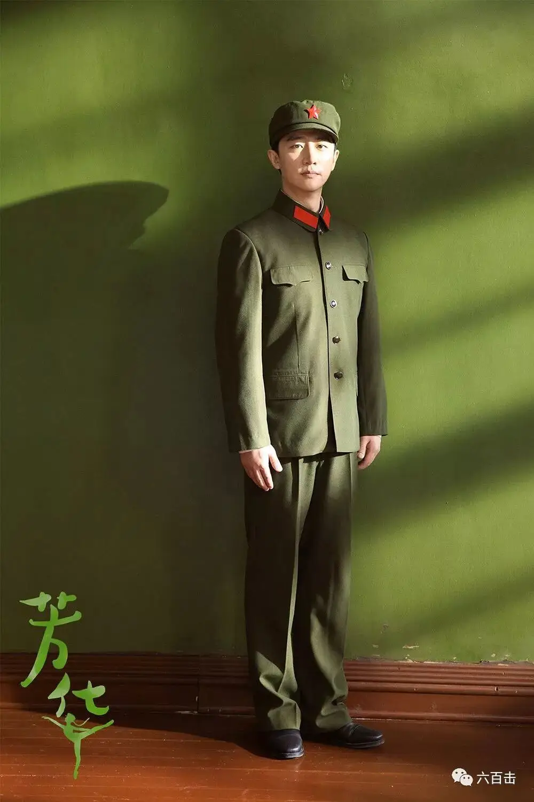
别人想要上大学
他就把机会拱手相让
别人是南方人，不喜欢吃饺子
他就煮挂面给他吃
他却大口大口吃着食堂里煮破皮的饺子
所以，就是猪跑没了
大家第一个想到的都是他
因为大家都知道
刘峰是一个不会拒绝吃亏的人
但是就是这么好的一个人
众人却逮住机会，要将他“置之死地”
刘峰表白女神林丁丁
却被这个“绿茶”给告发了
被冠上了“摸女兵”的罪名

在那个人人喊着抵御“小资”的禁欲时代
这绝对是一项死罪
那些曾经被他帮助的人
却没有一个人站出来为他说话
事实上，大家从心底嫉妒痛恨他
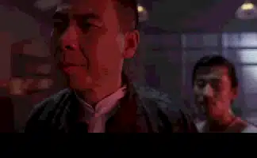
原因很简单，刘峰与文工团不合群
虽然大家统一在共产主义的光荣使命中
可是大多数人却没有无产阶级的节操
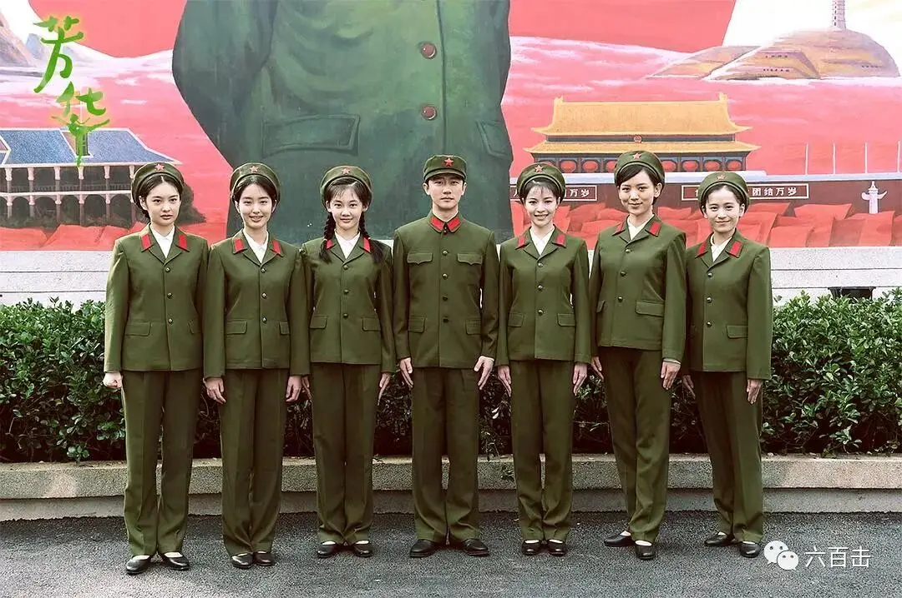
“绿茶”林丁丁表面上楚楚动人
但却爱慕虚荣
处心积虑想要找个高官子弟
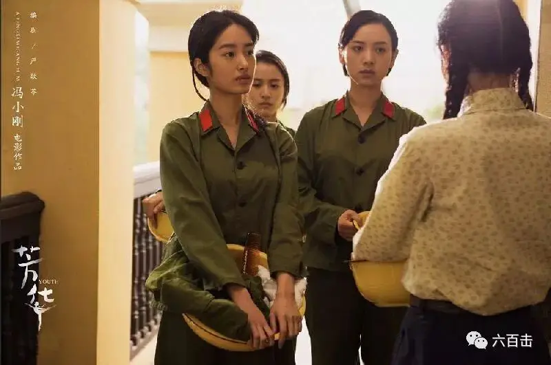
郝淑雯出身干部家庭
言行举止优越感十足
她自诩红色江山都是他们打下来的
就应该高人一等
陈灿也是干部子弟
想要低调做人
但转眼又不得不服从家人的安排
成为了自己讨厌的人
在他身上
权贵最终压倒了真情
萧穗子更像我们
想要追求爱情
却被时代和门当户对打败
面对众人对刘峰和何小萍的不公
没有站出来发声
而是选择了沉默
所以在这样一个污水池里
刘峰的存在
就是对他们的否定
就是对他们道德不干净的提醒和威胁
所以大家都想要借着这个机会
把刘峰从天上拉到地上
或者直接扔到地狱
然后互相默契地说
“
还活雷锋呢
连个姑娘都不放过
还不如我们呢
”
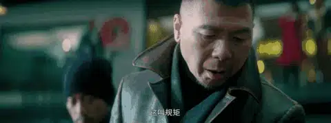
唯有何小萍一直爱着刘峰
她父亲被打为右倾分子
母亲也嫌弃她
到了文工团更是被大家孤立取笑
而刘峰为了保护她
故意隐瞒了她的身世
这点阳光足以暖透到处被冷待的何小萍
因为
“
没有被善待的人
最容易识别善良
也最珍惜善良
”
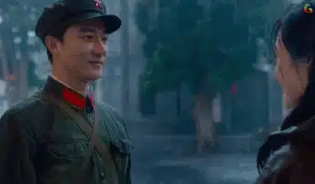
就这样两人一下子跌入了“地狱”
二人被下放卷入到越战中
一心求死想要被林丁丁永久纪念的刘峰
最终失去了自己的胳膊
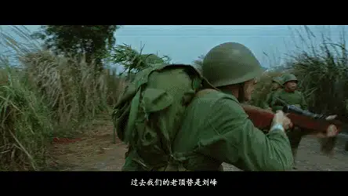
而目睹了战争血肉横飞的残酷之后
何小萍疯了
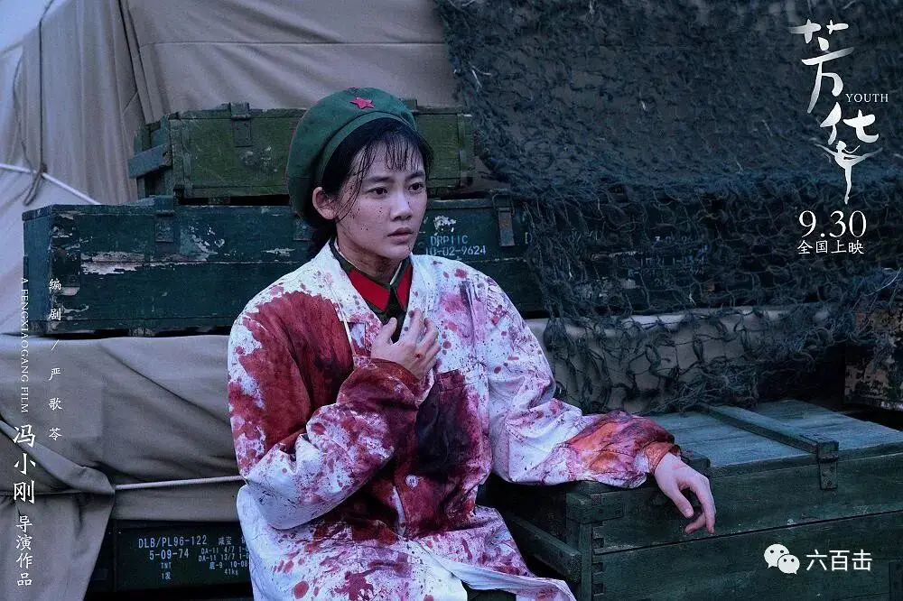
时光荏苒
昔日的活雷锋、战争英雄
改革开放后
转业成为了一个手无缚鸡之力的残疾人
刘潇退伍后到海南地区依靠给人送书谋生
但他的车被城管队没收
并罚款1,000元
而他一个月不吃不喝也才能赚300元
陈峰痛骂对方是土匪
却遭城管殴打致义肢掉地
恰好被郝淑雯遇到并替他交了罚款
郝淑雯痛骂城管：
“你们敢打伤残军人！
你们敢打战斗英雄！“
宣传还说是新一代最可爱的人
回来以后就被人遗忘了
刘峰的命运让人唏嘘
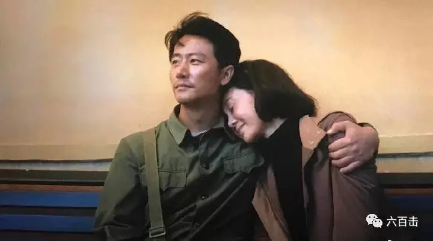
冯小刚的《芳华》是一首幻灭之诗
电影后半段更是泪弹不断
这种伤感
既来自于青春个体被时代碾压的残酷
更来自于美好、善良被遗忘的荒凉
芳华只留在转瞬即逝的曼妙舞姿中
还没来得及停下舞步
就已经发现物是人非
这种感觉如同梦幻一般
让人眩晕和唏嘘
在暖黄的镜头下
冯小刚用四分之一的时间堆砌了美好
再用四分之三的时间亲手毁掉这种美好
善良的人被苦待
爱慕虚荣的人得到的却是绝望
不管是在哪个时代
油腻的人继续油腻
过去是干部子弟
如今是风生水起的房产开发商
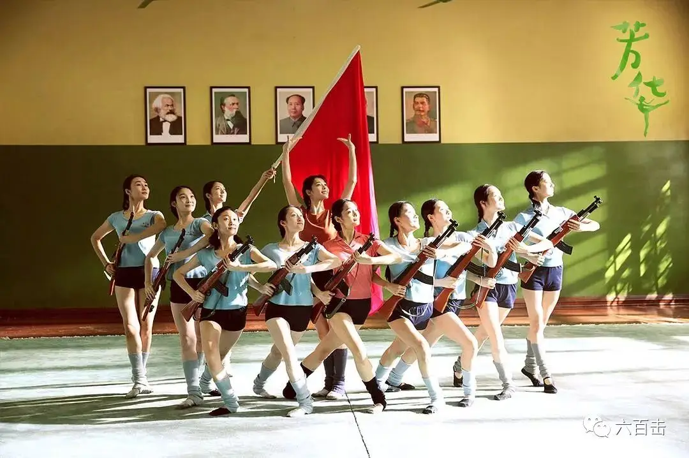
而刘峰还是刘峰
依旧善良
依旧可以去爱去理解何小萍
某种程度上
刘峰是美好善良的化身
芳华最大的悲伤
是善良被遗忘
不管是在文工团、越战
还是改革开放的新时代
刘峰始终是那个被伤害遗忘的人
电影用三十多年的时间跨度
去强化和推进这种失落
很多人会将芳华的幻灭归于时代的残酷
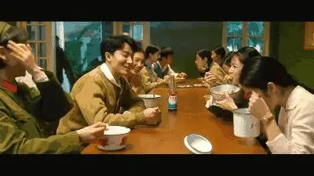
但是善良本就不属于人间
刘峰就是没有出生在那个灭绝人性的时代
也照样会被陷害、会被欺负和遗忘
如果刘峰生活在改革开放的新时代
他会因为扶老奶奶过马路而被讹诈
会因为帮助别人被凶徒刺死
也会因为关心正义成为良心犯
幻灭和疏离才是人生的真相
善良注定被永久遗忘
而刘峰式的好人也是虚构的
他是严歌苓和冯小刚一起画出来的希望
这个幻象令人怀念
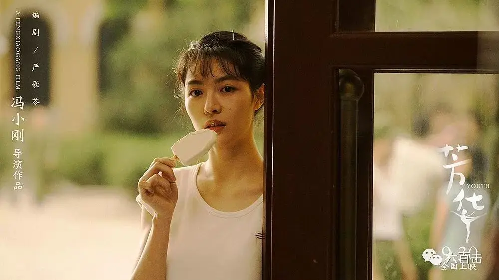
可问题是幻象虽然是假的
它的破灭
却会让无数个曾经杀死善良的人落泪
为什么？？
因为它唤出了我们对于良善的渴望
它唤醒了我们藏匿于心灵深处对于永恒的渴望
这是人类最深远的饥渴
我们渴望善良，但却杀死善良
我们渴望诚实，但却杀死诚实
我们渴望正义，但却选择沉默
我们会问好人为何没有好报
但却没有珍惜和看重生命中任何一次感动
我们何以如此矛盾
我们何以追寻却无法得到
看到善良的刘峰被如此伤害遗忘
我们也许才会明白
刘峰本不属于这世界
这个世界不配拥有刘峰
没错！！
善良不属于这个世界
我们也不配拥有善良
而在真实的历史中
那一位最善良最公义的耶稣
为了我们这些不配拥有他的人
被钉死在十字架上
付上了他对人类最大的爱
他流泪 他呼求
而那些曾经被他帮助的人
却在下面高喊着钉死他
无数的人偏行己路
竭尽全力想要遗忘和杀死耶稣
当耶稣最绝望最痛苦的时候
他却对这个世界说
“
父啊!赦免他们
因为他们所做的,他们不晓得
”
耶稣为了我们生
为我们活
为我们死
又为我们复活
他通过失去而赢得
通过失败而得胜
通过软弱而刚强
通过羞耻而荣耀
通过放弃一切而得到丰盛
他是我们的救赎主
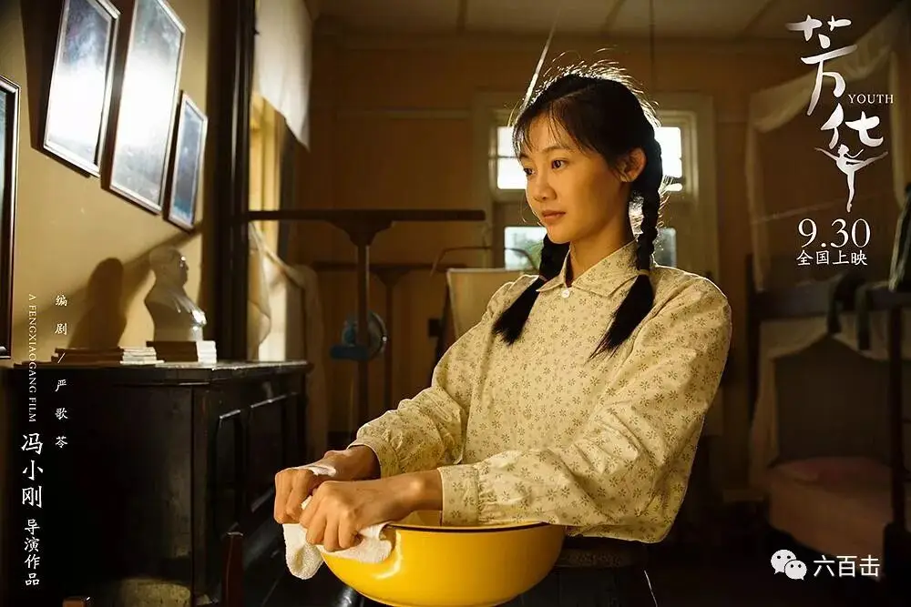
《芳华》很有诚意
但是缺少了救赎
没有了救赎
“芳华”只是转瞬即逝的幻象
只是跌入深渊前的回光返照
希望我们不要压抑和遗忘这种对良善的渴望
在即将来到的圣诞节
一同面对耶稣降生
以及他被钉死在十字架上的历史事实
因为它改变了全人类的历史和命运
也只有耶稣
才能给善良一个真实的答案
也唯有他
才能真正地安慰受伤的“刘峰”和“何小萍”
因为他说
“
凡劳苦担重担的人可以到我这里来
我就使你们得安息
”
相关推荐：
袁立，挺住！ | 这是一个无法认错且难有饶恕的世界
南京大屠杀80周年：我们当记住这位拯救25万中国难民的“东方辛德勒”
《至暗时刻》| 永不！永不！永远都不要放弃！
《潜行者》 | 这是全人类绝无仅有的电影了
《乡愁》 | 没有一个人能够将信仰拍的如此诗意和凝重
这里没有挑逗你眼目情欲的小鲜肉
也没有挑动你肉体情欲的段子
更没有膨胀你今生骄傲的鸡血
我们只在乎那些最质朴真诚的作品
在那里我们才能恢复真正的想象力
我们也坚信这才是我们真正需要的

ID:Six_hundred_hits
长按二维码，一键关注
【六百击】
-END-
电影评论
尽情分享朋友圈

苹果打赏通道